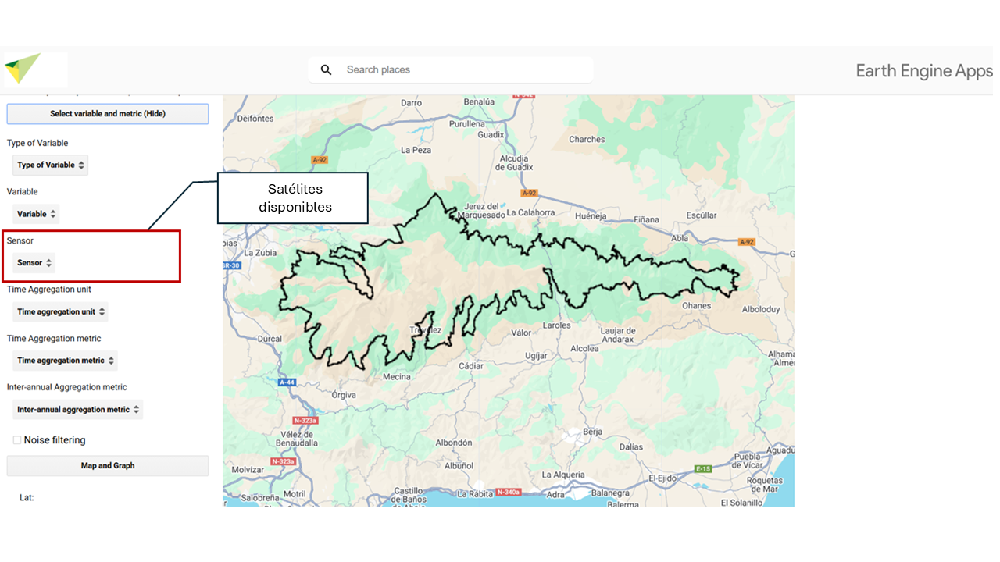

7 Sensor satelital
Selecciona con qué sensor quieres trabajar. Los sensores disponibles poseen distinta resolución temporal y espacial. Dependiendo de la variable elegida, obtendrás disponibilidad de datos para unos u otros sensores.

üõ∞Ô∏èMODIS 250 m, 16 d√≠as
MODIS (Moderate Resolution Imaging Spectroradiometer) es un sensor a bordo de los satélites Terra y Aqua de la NASA.
Resolución espacial: Depende de la variable seleccionada. Pueden ser datos a 250m, 1km, 4km… Esta información te aparecerá en la pestaña “Sensor” una vez hayas seleccionado tu variable. Resolución temporal: Depende de la variable seleccionada. Pueden ser datos diarios, cada 8 días o cada 16 días. Esta información te aparecerá en la pestaña “Sensor” una vez hayas seleccionado tu variable.
Para esta interfaz, se han utilizado los datos de las colecciones MODIS Terra.
Estos satélites proporcionan datos desde el 24/02/2000 hasta la actualidad, aunque la disponibilidad puede variar según la variable seleccionada.
üõ∞Ô∏èLandsat 30 m, > 16 d√≠as
La serie Landsat es operada por la NASA y el USGS. Estos datos incluyen Landsat 5, 7, 8 y 9.
Resolución espacial: 30 metros. Resolución temporal: Mayor a 16 días, ya que dependiendo del satélite tienen un período de revisita de 8 o 16 días cada uno.
El rango de fechas cubierto va desde 1984 hasta la actualidad, dependiendo de la disponibilidad de cada satélite: Landsat 5 (16/03/1984 - 05/05/2012) Landsat 7 (28/05/1999 - actualidad, con limitaciones desde 31/05/2003 por la falla del ETM+) Landsat 8 (18/03/2013 - presente) Landsat 9 (31/10/2021 - presente)
Entre el 05/05/2012 y el 18/03/2013, no hay datos disponibles debido a la interrupción en la captura de imágenes de Landsat 7. Aunque este satélite siguió operando, su utilidad estaba limitada desde 2003 por una falla en el Escáner de Línea de Mejora (ETM+). Debido a esta limitación, a partir de 2003 sus datos no se consideran en el rango completo de fechas disponibles.
üõ∞Ô∏èSentinel-2 10m, 5 d√≠as
El programa Sentinel-2 es operado por la Agencia Espacial Europea (ESA) y forma parte del programa Copernicus.
Resolución espacial: 10 metros. Resolución temporal: 5 días.
En esta interfaz, utilizamos el producto SR Harmonized, un producto de Reflectancia de Superficie (SR) ajustado para garantizar la coherencia entre los sensores de Sentinel-2A y Sentinel-2B mediante corrección atmosférica, ajuste espectral y normalización de datos.
El rango de fechas de este sensor va desde 28/03/2017 hasta la actualidad.